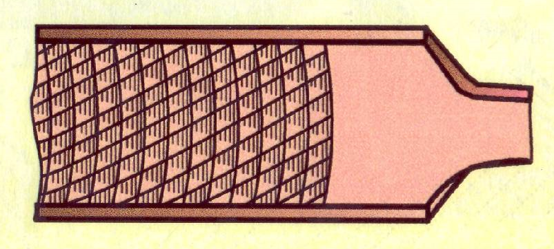

ОПИЛИВАНИЕ МЕТАЛЛА. ОСНОВНЫЕ СВЕДЕНИЯ
Режущий инструмент –
НАПИЛЬНИК
представляет собой стальной брусок определённого профиля и длины, на поверхности которого имеются насечки (нарезки), образующие впадины и остро заточенные зубцы (зубья), имеющие в сечении форму клина.
ВИДЫ НАСЕЧЕК
| Наименование | Изображение |
|---|---|
| 1) Одинарная | |
| 2) Двойная | |
| 3) Рашпильная |  |
| 4) Дуговая |
Для того чтобы удобнее держать напильник при работе на его хвостовик насаживают деревянную ручку (рукоятку), изготовленную из клена, ясеня, березы, липы или прессованной бумаги; последние лучше, так как не раскалываются.
Поверхность ручки должна быть гладкой, отполированной.Длина ручки должна соответствовать величине напильника. Размеры рукояток приводятся в справочниках. Диаметр отверстия ручки не должен быть боольше ширины средней части хвостовика напильника, а глубина отверстия должна соответствовать длине хвостовика.
Отверстие для напильника просверливают или выжигают, а чтобы ручка не раскалывалась, на её конец насаживают стальное кольцо.
Чтобы насадить напильник, хвостик его вставляют в отверстие ручки и, взяв напильник за насечённую часть правой рукой, не очень сильно ударяют головкой ручки о верстак (рис а) или молотком по рукоятке (рис б). Чтобы снять рукоятку с напильника, левой рукой крепко обхватывают рукотку, а правой рукоймолотком наносят два-три несильных удара по верхне у краю кольца (рис в), после чего напильник легко выходит из отверстия.
УХОД ЗА НАПИЛЬНИКАМИ
1. Предохранять напильники от незначительных ударов;
2. Хранить напильники на деревянных подставках в положении исключающем соприкосновении их между собой;
3. Не допускать попадания на них влаги;
4. Оберегать от попадания масла и наждачной пыли;
5. Нельзя обрабатывать наптльником материалы, твердость которых равна или превышает его твердость;
6. Новым напильником лучше обрабатывать сначала мягкие металлы, а после некоторого затупления – твердые металлы;
7. Очищают напильник коордовой щеткой;
8. Замасленные напильники чистят сначала куском березового угля натирая вдоль рядов насечек, а затем щеткой. Сильно замасленные напильники моют в керосине или бензине.